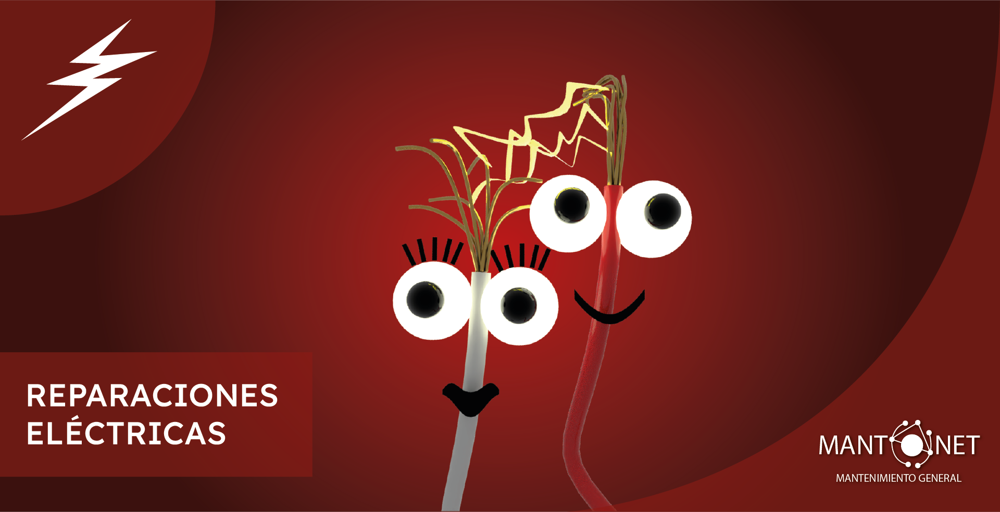

Electricistas Expertos en CDMX y Estado de México

Agendar VisitaNuestra Experiencia Técnica
Asegura la seguridad y eficiencia de tus instalaciones eléctricas con electricistas verdaderamente capacitados. En MANTONET, ofrecemos servicios de mantenimiento, reparación e instalación eléctrica profesional para hogares, corporativos y negocios industriales.
Nuestra capacidad técnica está respaldada por especialistas con más de 30 años de experiencia en el sector del mantenimiento y la construcción. Operamos rigurosamente bajo las Normas Oficiales Mexicanas (NOM), garantizando que cada empalme, cableado y tablero cumpla con los estándares más altos de seguridad.
Realizamos un diagnóstico profesional de tus instalaciones y te entregamos un reporte fotográfico y técnico detallado con observaciones y recomendaciones claras. Tu seguridad eléctrica no se deja a la intuición; trabajamos con transparencia absoluta. ¡Más de 150 proyectos eléctricos realizados sin incidentes nos respaldan!
Nuestra Cobertura
Contamos con la logística y el equipo técnico necesario para brindar atención oportuna en una amplia variedad de zonas. Realizamos proyectos eléctricos tanto a nivel residencial como comercial en:
- Estado de México: Tlalnepantla de Baz, Naucalpan de Juárez, Atizapán de Zaragoza y municipios aledaños.
- Fraccionamientos y zonas residenciales: Atendemos proyectos en Condado de Sayavedra, Club de Golf Bellavista, Las Arboledas, Ciudad Satélite, Lomas Verdes y Zona Esmeralda.
- Ciudad de México: Brindamos servicio constante en Polanco, Lomas de Chapultepec, el Centro Histórico y diversas alcaldías de la ciudad.
Cualquiera que sea la ubicación o el tamaño del proyecto, aplicamos el mismo rigor técnico y profesionalismo.
¿Cómo Trabajamos Nuestros Servicios Eléctricos?
- Agendamos una revisión y diagnóstico profesional para detectar fallas, evaluar necesidades de instalación o mantenimiento preventivo.
- Te entregamos una propuesta detallada con materiales, tiempos de ejecución y precios claros.
- Programamos los trabajos una vez aprobada la propuesta, adaptándonos a la logística de tu hogar o negocio.
- Ejecutamos los trabajos de forma segura, limpia y eficiente. Al finalizar, entregamos tu reporte técnico y fotográfico, y garantizamos nuestro servicio.
Preguntas Frecuentes sobre Electricidad y Mantenimiento
¿Por qué es importante el mantenimiento eléctrico?
El mantenimiento eléctrico es fundamental para la seguridad y eficiencia de cualquier propiedad. Principalmente, te ayuda a:
- Prevenir accidentes graves: Reduce el riesgo de incendios por cortocircuitos, descargas eléctricas y daños a equipos.
- Asegurar la continuidad operativa: Evita cortes de energía inesperados que pueden detener la actividad de tu empresa o las comodidades de tu hogar.
- Ahorrar dinero a largo plazo: Un mantenimiento preventivo es mucho más económico que reparar fallas mayores o reemplazar equipos dañados.
- Optimizar el consumo de energía: Una instalación en buen estado funciona de manera más eficiente, lo que se traduce en un menor costo en la factura de luz.
¿Cuáles son las señales de una instalación eléctrica defectuosa?
Señales de Alerta: 7 Peligros Eléctricos que No Debes Ignorar
Tu instalación eléctrica te avisa cuando algo anda mal. Presta atención a estas señales de peligro:
- Luces que parpadean o bajan de intensidad: Especialmente al encender aparatos de alto consumo.
- Interrupciones constantes de los "breakers" o fusibles: Indica que hay una sobrecarga o un cortocircuito.
- Chispas, zumbidos o crujidos en los enchufes o interruptores.
- Enchufes o placas calientes al tacto o con marcas de quemaduras.
- Olor a plástico o cable quemado: Es una señal de alarma crítica.
- Pequeñas descargas eléctricas al tocar aparatos o interruptores.
- Uso excesivo de extensiones y multicontactos, lo que evidencia una falta de enchufes adecuados.
¿Qué es una sobrecarga y cómo puedo evitarla?
Sobrecargas Eléctricas: ¿Qué Son y Cómo Proteger Tu Hogar y Negocio?
Una sobrecarga eléctrica ocurre cuando se conectan demasiados aparatos a un mismo circuito, demandando más corriente de la que este puede soportar. Esto sobrecalienta los cables y puede provocar un incendio.
Para evitarla, sigue estos consejos:
- Distribuye el consumo: No conectes todos los aparatos de alto consumo en la misma línea.
- Evita el abuso de extensiones: Son una solución temporal. Solicita a un profesional que instale nuevas tomas.
- Conoce la capacidad de tus circuitos: Un electricista puede evaluar si tu instalación soporta la demanda.
- Instala un tablero eléctrico moderno: Los tableros con interruptores termomagnéticos se botan automáticamente para cortar la energía.
¿Cada cuánto tiempo debo realizar un mantenimiento eléctrico?
Frecuencia del Mantenimiento: El Calendario Ideal para Cada Tipo de Propiedad
La frecuencia del mantenimiento depende del tipo y uso de la instalación:
- Residencial (Casas y Departamentos): Se recomienda una revisión completa cada 5 a 10 años. Si tiene más de 20 años, cada 2-3 años.
- PYMES y Oficinas: Es ideal realizar una inspección anual para verificar el estado de tableros, cableado y conexiones.
- Empresas e Industria: Requieren un plan de mantenimiento preventivo continuo, con revisiones trimestrales o semestrales.
¡Importante! Si notas señales de alerta (luces que parpadean, olor a quemado, etc.), debes llamar a un electricista de inmediato.
¿Qué incluye una revisión de mantenimiento eléctrico residencial?
Checklist del Mantenimiento Eléctrico en el Hogar
Un mantenimiento residencial profesional debe incluir, como mínimo, los siguientes puntos:
- Inspección y apriete del tablero eléctrico: Revisar que todos los tornillos estén bien apretados.
- Medición de voltaje y corriente: Comprobar que los niveles de energía sean estables y seguros.
- Revisión de enchufes e interruptores: Asegurarse de que no haya conexiones flojas o daños.
- Verificación de la toma de tierra: Comprobar que el sistema de protección funcione.
- Revisión del estado del cableado: Inspeccionar áreas accesibles para detectar deterioro.
¿Y qué diferencia hay con el mantenimiento para empresas o PYMES?
Más Allá del Enchufe: Mantenimiento Eléctrico para Negocios
El mantenimiento comercial o industrial se enfoca en la continuidad operativa y la seguridad industrial. Incluye:
- Termografía de tableros: Se usa cámara térmica para detectar puntos calientes invisibles.
- Revisión de motores y maquinaria: Verificar conexiones de equipos críticos.
- Mantenimiento del banco de capacitores: Esencial para corregir el factor de potencia.
- Inspección de sistemas de iluminación de emergencia y plantas de respaldo.
- Verificación de cumplimiento de normativas: Asegurar cumplimiento de la NOM-001-SEDE.
¿Cómo puedo ahorrar energía en mi casa o negocio?
Ahorro Inteligente: Consejos Prácticos para Reducir Tu Factura de Luz
Ahorrar energía no solo es bueno para tu bolsillo, sino también para el medio ambiente. Estrategias:
- Cambia a iluminación LED: Consume hasta un 80% menos.
- Desconecta aparatos "vampiro": Usa multicontactos con interruptor.
- Optimiza el uso de la climatización: Mantén los equipos con buen mantenimiento.
- Elige electrodomésticos eficientes: Busca etiquetas de alta eficiencia.
- Para empresas: Realizar un estudio de calidad de la energía para corregir ineficiencias.
¿Puedo hacer yo mismo las reparaciones eléctricas?
DIY vs. Profesional: ¿Cuándo Puedes y Cuándo NO Debes Tocar la Electricidad?
Manipular la electricidad sin el conocimiento adecuado es extremadamente peligroso. Define bien los límites:
Tareas que podrías hacer (con precaución y cortando la energía):
- Cambiar una bombilla.
- Reemplazar la placa de un enchufe o interruptor (sin tocar el cableado interno).
Tareas que SIEMPRE debe hacer un electricista certificado:
- Instalar nuevos enchufes o circuitos.
- Cambiar o reparar el tablero eléctrico.
- Solucionar un cortocircuito.
- Cualquier tarea que implique manipular el cableado interno de las paredes.
- Instalación de maquinaria en empresas.
Recuerda: Tu seguridad y la de tu propiedad no tienen precio. Ante la duda, siempre llama a un profesional.
Costos de Servicios Individuales
Cambio de enchufe
Desde $600.00 M.X.N.
Condiciones
- Reemplazar un contacto existente en la misma caja.
- No incluye ranurado o cambio de cableado extenso.
- Incluye accesorio básico.